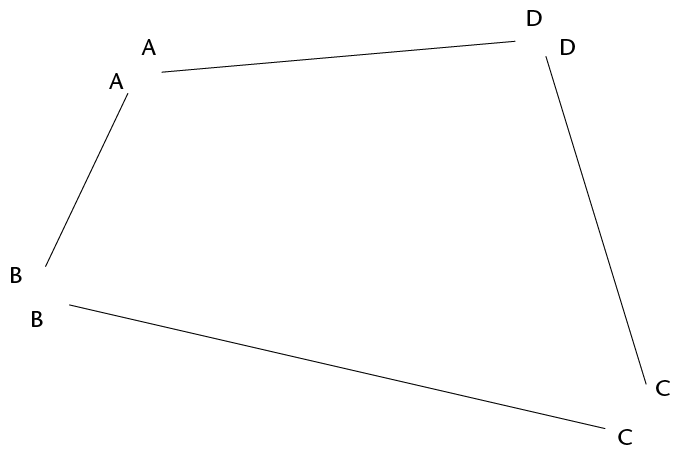
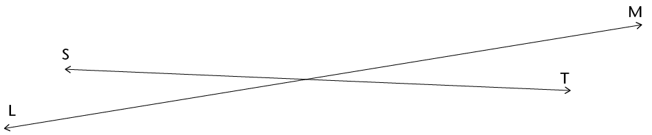
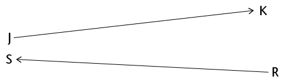

<div class="container">
  <div id="contents" class="col-md-12 main-content"><h1 xmlns="http://www.w3.org/1999/xhtml" id="toc-id-14">Geometry of straight lines</h1>
<p xmlns="http://www.w3.org/1999/xhtml">You probably know exactly what is meant by a line. In this chapter, you will learn about
line segments and rays and how they differ from lines. You will also learn more about
parallel and perpendicular lines and how we indicate them on a diagram.
</p>
			
			
			<h2 xmlns="http://www.w3.org/1999/xhtml" id="toc-id-15">Line segments, lines and rays</h2>
			<h3 xmlns="http://www.w3.org/1999/xhtml" class="Head-investigation--after-b-head-">Line segments</h3>
			<ol xmlns="http://www.w3.org/1999/xhtml"><li>
			<p class="Body-investigation">	Measure each side of
this quadrilateral. Write the measurements at each side.</p>
			<p class="Body-no-indent"></p>
			<p class="Body-no-indent">Each side of a quadrilateral is a <b>line segment</b>. </p>
			<p class="Body-no-indent"></p>
			<div class="note"><p class="Body-content-no-indent">A <b>line segment</b> has a definite starting point and a definite endpoint. We can draw and measure line segments.</p>
						</div></li><li><p class="Body-investigation">	Draw a line segment that is 12 cm long.
</p></li></ol><h3 xmlns="http://www.w3.org/1999/xhtml" class="Head-investigation">Lines and rays</h3>
			<p xmlns="http://www.w3.org/1999/xhtml" class="Body-no-indent">We can think of lines that have no ends, although we cannot draw them completely. We draw line segments to represent lines. When we draw a line segment to represent a line, we may put arrows at both ends to show that it goes on indefinitely on both sides.</p>
			<p xmlns="http://www.w3.org/1999/xhtml" class="Body-no-indent"></p>
			<div xmlns="http://www.w3.org/1999/xhtml" class="note"><p class="Body-content-no-indent">The word <b>line</b> is used to indicate a line that goes on in both directions. We can only see and draw part of a line. A line cannot be measured.</p>
						</div><ol xmlns="http://www.w3.org/1999/xhtml"><li><p class="Body-investigation">	Draw line AB.</p>
			<p class="Body-no-indent"></p>
			</li><li><p class="Body-investigation">	Did you draw the
whole of line AB? Explain.</p><hr/><div class="note"><p class="Body-content-no-indent">We can also think of a line that has a definite starting point but goes on indefinitely at the other end. This is called a half-line or a <b>ray</b>.</p>
						</div><p class="Body-no-indent">We can draw the starting point and part of a ray, using an arrow to indicate that it goes on at the one end.</p>
			<p class="Body-no-indent">Ray PQ goes on towards the right:</p>
			<p class="Body-no-indent"></p>
			<p class="Body-no-indent">Ray DC goes on towards the left:</p>
			<p class="Body-no-indent&#10;para-style-override-1"></p>
			</li>
<li><p class="Body-investigation">	Draw ray
EF.</p>
			<p class="Body-investigation"></p>
		</li>	<li><p class="Body-investigation">	Did you draw the
whole of ray EF? Explain.</p>
			<hr/></li><li>
<p class="Body-investigation">	Do line segments XY and GH meet
anywhere?</p>
			<div class="frame-2">
				</div>
			<hr/></li><li>
<p class="Body-investigation-hanging">	Do lines KL and NP meet
anywhere?</p>
			<div class="frame-2">
				</div>
			<hr/></li>
<li>
<p class="Body-investigation">	Do rays AB and CD meet anywhere?</p>
			<div class="frame-2">
				</div>
			<hr/></li><li>
<p class="Body-investigation">	Do rays FT and MW meet anywhere?</p>			<div class="frame-2">
				</div>
			<hr/></li>
<li>
<p class="Body-investigation">	Do rays JK and RS meet anywhere?</p>
			<div class="frame-2">
				</div>
			<hr/></li>
</ol><h2 xmlns="http://www.w3.org/1999/xhtml" id="toc-id-16">Parallel and perpendicular lines</h2>
			<h3 xmlns="http://www.w3.org/1999/xhtml" class="Head-investigation--after-b-head-">Parallel lines</h3>
			<p xmlns="http://www.w3.org/1999/xhtml" class="Body-no-indent">Two lines that are a constant distance apart are called <b>parallel lines</b>. Lines AG and BH below are parallel. The symbol <span>|| </span>is used to indicate parallel lines. We write: AG <span>|| </span>BH.</p>
			<p xmlns="http://www.w3.org/1999/xhtml" class="Body-no-indent"><span></span> </p>
			<ol xmlns="http://www.w3.org/1999/xhtml"><li><p class="Body-investigation">	Measure
the distance between the two lines:</p><ol><li>
			<p class="ques-a--2-space-below">	at A and
B	</p><hr/></li>
			<li>
<p class="ques-a--2-space-below">		at C and D	</p>
			<hr/></li><li>
<p class="ques-a--2-space-below">	at E and F	</p>
			<hr/></li></ol>
<p class="Body-no-indent">Here are some more parallel lines: </p>
			<p class="Body-no-indent para-style-override-1"><span></span></p></li>
			<li><p class="Body-investigation">	Draw two
parallel lines.</p><hr/></li>
			<li><p class="Body-investigation">	Draw three lines
that are parallel to each other.</p><hr/></li>
			<li><p class="Body-investigation">	Will parallel
lines meet somewhere?</p>
			<hr/></li>
<li>
<p class="Body-investigation">	Do you think lines PQ and ST are parallel? How
can you check?</p><p class="Body-no-indent"><span></span> </p><hr/></li>
			
			<li><ol><li>
<p class="ques-a-">	Draw two lines that are almost parallel, but not
quite.</p><hr/></li>
		<li>	<p class="ques-a-">		Describe what you did to
make sure that your two lines are not parallel.</p>
			<hr/></li></ol></li>
<li>
<p class="Body-investigation para-style-override-7">Can two line segments be
parallel? </p>
			<div class="Basic-Text-Frame frame-190">
				<hr/></div></li>
<li>
			<p class="Body-investigation para-style-override-7">
Are line segments DK and FS parallel?</p>
			<div class="frame-2">
				</div>
			<hr/></li>
			<li>
<p class="Body-investigation">	Are line segments MN and AB parallel?</p>
			<p class="Body-no-indent para-style-override-32"><span></span> </p>
			<hr/>
			</li>
			<li>
<p class="Body-investigation-hanging">	What can you do so that you will
be better able to check whether the above two line segments are parallel or
not?</p>
			<hr/></li>
			<li>
<p class="Body-investigation">	Can a line be parallel on its own?</p><hr/></li>
			<li>
<p class="Body-investigation para-style-override-1">	Draw a line that is
parallel to line XY above.</p></li></ol>

<h3 xmlns="http://www.w3.org/1999/xhtml" class="Head-investigation">Perpendicular lines</h3>
			<p xmlns="http://www.w3.org/1999/xhtml" class="Body-no-indent">Lines CD and KL below are
perpendicular to each other. The symbol <span class="char-style-override-26"/> is used to indicate
perpendicular lines. We write: CD <span class="char-style-override-26"> KL.</span></p>
			<p xmlns="http://www.w3.org/1999/xhtml" class="Body-no-indent"><span></span></p>
			<ol xmlns="http://www.w3.org/1999/xhtml"><li><p class="Body-investigation">	How many
angles are formed at the point where the above two lines meet?</p>
			<hr/><div class="note"><p class="Body-content-no-indent">Two lines that form right angles are <b>perpendicular</b> to each other.</p>
						</div>
			</li>
						
					<li>	<p class="Body-investigation">
Draw two rays that have the same starting point.</p> </li>
				<li>
			<p class="Body-investigation">	Draw two rays that are
perpendicular to each other and have the same starting point.</p></li>
		
			<li><p class="Body-investigation">	Draw two rays
that meet, but not at their starting points.</p></li>
		
		<li>	<p class="Body-investigation-hanging">	Draw two
rays that meet but not at their starting points, and that are perpendicular to
each other.</p></li>
						<li><p class="Body-investigation-hanging">	Can you
draw two rays that have the same starting point, and are parallel to each
other?</p></li></ol>
  </div>
</div>